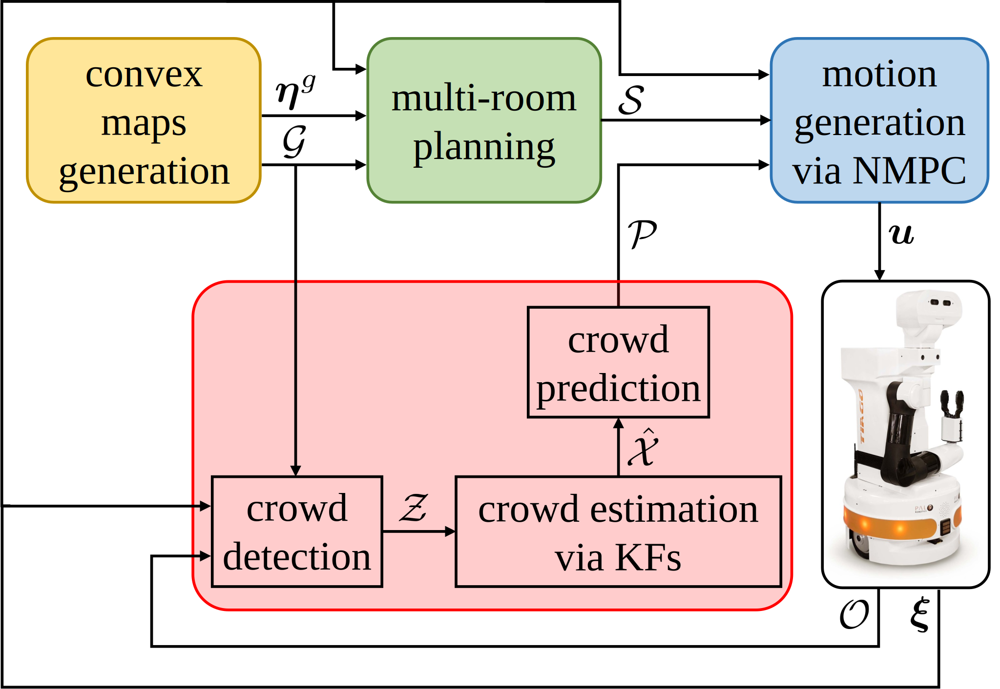

Project Outline
This project presents a sensor-based Nonlinear Model Predictive Control (NMPC) framework for safe robot navigation in multi-room environments populated with static obstacles and moving humans. The approach leverages LiDAR and RGB-D data to provide accurate perception and Kalman Filters, regulated by Finite State Machines, for crowd state estimation. High-level planning is achieved by decomposing the environment into convex navigable regions and computing room-to-room trajectories toward the goal. Motion generation relies on NMPC with Control Barrier Function (CBF) constraints to ensure safe and efficient collision avoidance in the presence of both static and dynamic agents. The modular architecture integrates planning, perception, and control into a unified system adaptable to different platforms and sensor configurations.
Architecture
Simulations
Work in progress...
Experiments
Work in progress...
Work in progress...
Project Explanation
Watch the following video for a comprehensive overview of the project.